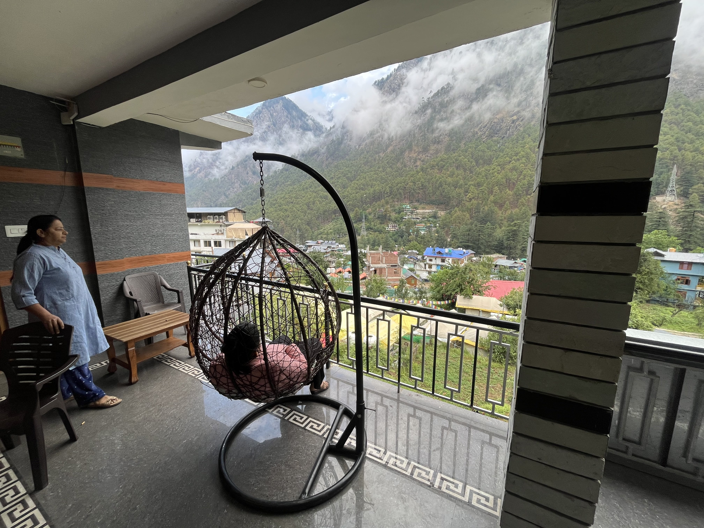

Growth is not loud. It happens quietly — when you choose yourself again and again.

Some chapters are written with patience, others with courage. Both matter.

Love shows up in small ways — in listening, in staying, in believing.

Support is not fixing someone. It is standing beside them while they grow.

Healing is not linear. Progress counts even when it feels slow.

Becoming yourself is the most honest work you will ever do.